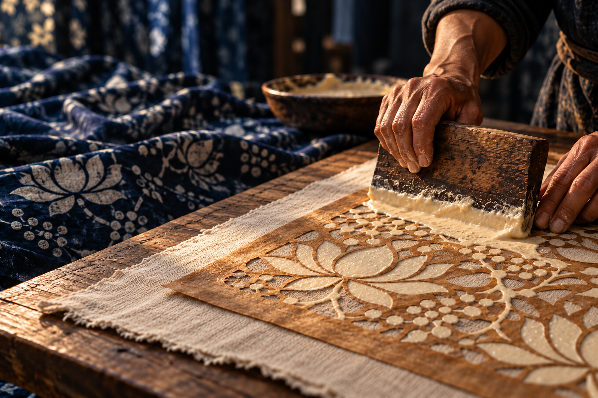
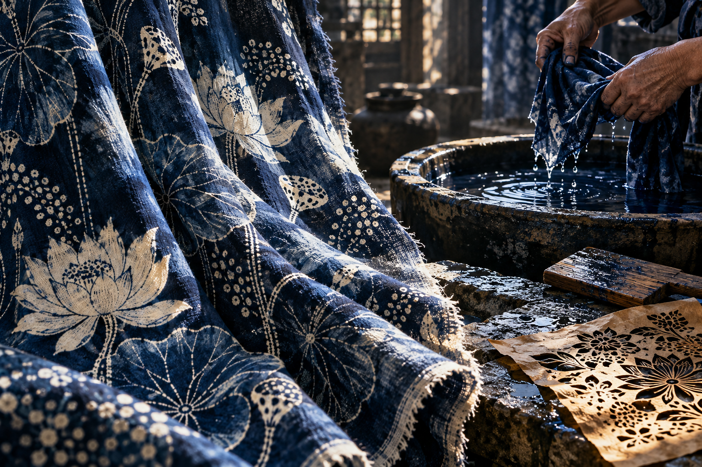

蓝印花布互动展 MAKE A MEMORY
为这段旅程，留下一方蓝。
走进一门手艺，亲手创作，
把自己的花布带到手机里。
A study in blue.一方留白，万象成蓝
从手艺，到生活。从一枚花版，到你手中的蓝。THE INDIGO ATELIER / 2026

01 / THE ART OF RESIST
白，
从何而来。
刻下的空隙，留下了花。
用双手，给白一个位置。
01 / METAMORPHOSIS 从一株植物，到一方蓝
INDIGO / AIR / TIME染进去的是蓝
留下来的是时间
蓝，
不是一瞬间。
01 / 六个工艺片段
刻版 · 先把花藏进孔洞
用刀代笔，把纹样刻成可重复使用的花版。留一道桥，让细小的版材与四周相连。
移动指针，看蓝的流动。点击工序，追随一方布的旅程。
CRAFT / ANATOMY 蓝白之间，隔着什么
白的秘密，
在蓝之外。
白不是画上去的。
它从被保护的那一刻开始。
01 — 03
三层相遇，
才有蓝白。
花版让白浆经过孔洞，白浆保护棉布。染色后去浆，白花才从蓝里显出来。
- 01花版 / 控制白浆经过的地方桥连住版材，也挡住白浆。
- 02白浆 / 为白色留一个位置刮到的地方被保护，漏下的地方会染蓝。
- 03棉布 / 接住你的每次选择去掉浆层，显出这一次的纹样。
数字工坊缩短了等待，保留“孔洞过浆、浆处留白”的关系。
MATERIAL / DIGITAL COTTON
近看一方布。
每一道白，
都有来处。
这匹数字样布跟随你的花版与制作结果。
拖动转向，或近看经纬里的细节。
当前花版 · 满浆预览莲华珠露
拖动布面 · 看光经过褶皱
03 / ATELIER 做自己的花布
让白，发生。
先在布面拖动，留下一道白浆。
每一处白，都由你亲手留下。
一方布 / 当前花版花版 · 待施浆
版材孔洞白浆
在花版上拖动，刮下第一道白浆。
收起这一方蓝命名、保存，或带走可编辑的设计＋
存在这台设备的浏览器里。导出设计文件，可以换个地方接着做。
YOUR ARCHIVE 每一方，都不一样
把这一刻，
织进布册。
你的选择、手势与偶然，都值得留下。STORED ON THIS DEVICE

MATERIAL STUDY / 染坊意象04 / LIVING HERITAGE
布会旧。
手艺，
生生不息。
花布曾是被面、包袱、头巾，也是寻常日子里对美的想象。蓝与白，在一代代人的手中，留下了生活的温度。
屏幕上的一次刮浆，是走近真实手艺的开始。去看一张手刻的花版，摸一方有经纬的棉布，认识蓝白背后的时间与劳动。
南通蓝印花布印染技艺 ↗蓝印花布的前世今生 ↗延伸阅读 / 中国非物质文化遗产网